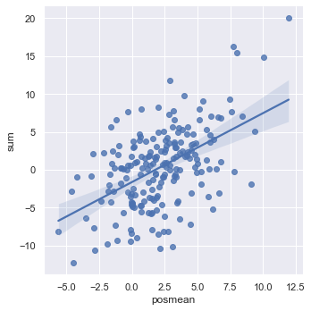

Python Visualization
Here some python visualization dummy scripts are saved
Data
import matplotlib.pyplot as plt
%matplotlib inline
%config InlineBackend.figure_format = 'png'
import numpy as np
N = 30
x_1 = np.random.randn(N) * 3
x_2 = np.random.randn(N) * 3 + 2
x_3 = np.random.randn(N) * 3 + -2
Work with pandas
import pandas as pd
- create data from numpy matrix
mydat = pd.DataFrame (np.matrix ([x_1,x_2,x_3]).transpose ())
- create data from two numpy arrays
here you need to flatten the arrays first
X = 2 * np.random.rand(100,1)
y = 4 +3 * X+np.random.randn(100,1)
mydat = pd.DataFrame ({'x':X.flatten(), 'y': y.flatten()})
- describe the data
mydat.describe ()
- Set the name of the columns
mydat.columns = ["nomean", "posmean", "negmean"]
mydat.columns
plt.plot(mydat.nomean, c = "lightblue", ls = '--', marker = "o",
ms = 6, label ="nomean")
plt.plot(mydat.posmean, c = "darkorange", ls = '--', marker = "s",
ms = 6, label ="posmean") # ms = marker size
plt.plot(mydat.negmean, c = "lightgreen", ls = '--', marker = "^",
ms = 6, label ="negmean")
plt.legend(loc = 'upper right',bbox_to_anchor = (1,1))
plt.xticks(list(range(20)), rotation = 'vertical') # sets the ticks on
# x-axis and puts
# them vertically.
- get the entry (x,y) in your relational table
mydat.head (5)
mydat.iloc[2,1]
- slicing the data
mydat[0:4]
- get by column
mydat[['nomean', 'posmean']].head (3)
- get by row and column
mydat[['nomean', 'posmean']][::2]
print(mydat[['nomean', 'posmean']].iloc [0,1])
- new column
mydat['sum'] = mydat['nomean'] + mydat['posmean'] + mydat['negmean']
mydat.columns
mydat2 = mydat
mydat.head ()
- drop a column
mydat2.drop ('sum', axis = 1).head ()
- filter through booleans
filt = mydat.nomean < 0
print (mydat[['sum', 'negmean']][filt])
- remove duplicates
print (np.matrix ([[1,2,1],[3,3,3]]).transpose ())
pd.DataFrame (np.matrix ([[1,2,1],[3,3,3]]).transpose ()).iloc[:,1].unique ()
- on the difference between
.ilocand.loc
notice by the way that this are outdated. by now you should use .iat
and .at.
The difference is the following.
.iat : uses the strict position in the matrix
.at : search by index and column names
print (mydat)
mydat.at[0, 'negmean']
mydat.iat[0,2]
To further understand the thing consider
mydat2 = mydat[::2]
mydat2
print (mydat2.at[6, 'nomean']) ## this by real index independent of the axis
print (mydat2.iat[6, 0]) ## this sixth row in the matrix
- categorical variables
This is important for treating them as dummies in regression as well for facetwraps.
mydat.head ()
mydat["category"] = np.repeat (range (4), 5)
mydat.info ()
To transform this into a category use
mydat.category = mydat.category.astype ('category')
mydat.info ()
To view the category types
mydat.category.cat.categories
MatplotLib
plt.plot(x_1, c = "lightblue", ls = '--', marker = "o",
ms = 6, label ="nomean")
plt.plot(x_2, c = "darkorange", ls = '--', marker = "s",
ms = 6, label ="posmean") # ms = marker size
plt.plot(x_3, c = "lightgreen", ls = '--', marker = "^",
ms = 6, label ="negmean")
plt.legend(loc = 'upper right',bbox_to_anchor = (1,1))
plt.xticks(list(range(20)), rotation = 'vertical') # sets the ticks on
# x-axis and puts
# them vertically.
- stacked histograms via matplotlib
plt.hist([mydat[mydat.bitwise == True].nomean,
mydat[mydat.bitwise == False].posmean])

plt.hist([mydat[mydat.bitwise == True].nomean,
mydat[mydat.bitwise == False].posmean],
stacked = True)

Seaborn
import seaborn as sns
sns.distplot (mydat['nomean'])
mydat.head ()
g = sns.lmplot(x="posmean", y="sum", data = mydat)

import statsmodels
g = sns.lmplot(x="posmean", y="sum", col="bitwise", hue="bitwise", data=mydat,
y_jitter=.02, truncate=False)

To further inspect different visualization techniques check at the seaborn page.
g = sns.lmplot(x="posmean", y="sum", data = mydat,
hue = 'bitwise', fit_reg = False)

- joinplot for inspecting the density of two functions
g = sns.jointplot (data = mydat, x = 'posmean', y = 'negmean')
g = sns.jointplot (data = mydat, x = 'posmean', y = 'negmean', kind = 'hex')
sns.jointplot (data = mydat, x = 'posmean', y = 'negmean'). \
plot_joint(sns.kdeplot, zorder=3, n_levels=6) ## add isolines

- kdeplot without data
sns.kdeplot (mydat.posmean, mydat.nomean)
To draw the isolines via colour scale use the shade bool
sns.kdeplot (mydat.posmean, mydat.nomean,
shade = True)

To still see the grids
sns.kdeplot (mydat.posmean, mydat.nomean,
shade = True, shade_lowest = False)

- change the background style
sns.set(style="darkgrid")
sns.kdeplot (mydat.posmean, mydat.nomean)

- create subplots
## specify your R par(mfrow=c(x,y))
f, axes = plt.subplots(1,2, figsize = (12, 6))
k1 = sns.kdeplot(mydat.posmean, mydat.nomean, ax = axes[0], cmap = 'Greens')
k2 = sns.kdeplot(mydat.posmean, mydat.negmean, ax = axes[1], cmap = 'Greens')

with more columns the axis index becomes more complex.
## specify your R par(mfrow=c(x,y))
f, axes = plt.subplots(2,2, figsize = (12, 6))
k1 = sns.kdeplot(mydat.posmean, mydat.nomean, ax = axes[0,1], cmap = 'Greens')
k2 = sns.kdeplot(mydat.posmean, mydat.negmean, ax = axes[1,0], cmap = 'Greens')

- violinplot
same information as boxplot. on top of it you have the width that tells you how many datapoints falls into each level for each category
k1 = sns.violinplot(data = mydat, x = 'bitwise', y = 'nomean')

- facet grids
this is useful when plotting many variables and inspecting their properties for different categories.
you might do that as follows
## create some more categories
rand = np.random.randn(200)
category = ['2008' if x > 0 else '2009' for x in rand]
mydat['year'] = pd.Series(category).astype('category')
category = ['posExtreme' if x > 2 else 'normal' if x < 2 else 'negExtreme' for x in rand]
mydat['extreme'] = pd.Series(category).astype('category')
mydat.info()
set(['posExtreme' if x > 2 else 'normal' if x < -2 else 'negExtreme' for x in rand])
g = sns.FacetGrid(data = mydat, row = 'year', col = 'extreme', hue = 'year')
g.map(plt.scatter, x = 'nomean', y = 'posmean')